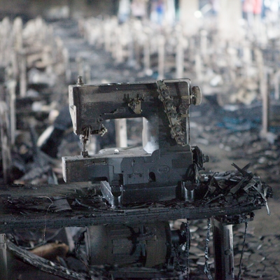

Fast Fashion is a cheap, often low-quality, clothing product that’s mass produced by retailers in response to the latest trends. Some examples of fast fashion companies are Zara, H&M, Forever 21, GAP, SHEIN, Fashion Nova, and many more!
So why is fast fashion criticized so much? It’s affordable and cute! Aside from fast fashion being extremely harmful to the environment, many of these world-wide companies treat their garment workers poorly. This includes dangerous conditions, physical abuse, long hours with no lunch breaks, and low pay. For example, in an International Labor Organization 2018 report, one H&M worker reported that her employer made lunch dependent on finishing “urgent pieces”. She added that, “we are not allowed to go to the toilet, the targets are so high. The in-charge things like, ‘if you go to the toilet, who will do the work? Who is going to complete the target? Go to work and finish it.” This is just one example of the maltreatment many garment workers experience from fast fashion companies. Additionally, many of these garment workers do live in third-world countries as many fast fashion companies target those countries for their lenient regulations. Thus, garment workers rely on their jobs to make a living, but instead of receiving an hourly wage, they are paid 2 to 6 cents per piece of clothing they make. On top of that, many workers are working under dangerous conditions that can harm their health. When producing clothing, many of these factories use 8,000 synthetic chemicals, most of which are shown to cause cancer. So when garment workers are exposed to those chemicals for 14+ hours a day, their health is at risk.
Image of sewing machine from the collapse of the Rana Plaza in 2013, killing 1134 garment workers in Dhaka, Bangladesh
Reflect on your own buying habits. Choose to buy from ethical clothing brands instead of fast fashion brands.
Share the latest news from Remake, a global advocacy organization fighting for fair pay in the clothing industry, to your social media or local community.
Sign petitions from websites like Change.org to advocate for better labor practices for garment workers.
Give to the Garment Workers Relief Fund to support L.A. garment workers who have been affected by the COVID-19 pandemic.
Influencer marketing has been the new way to promote fast fashion. Through sponsored #ad posts, companies like Fashion Nova often use influencers to target teenage girls on social media. One way to stop supporting these companies is to unfollow influencers who endorse companies like Fashion Nova.